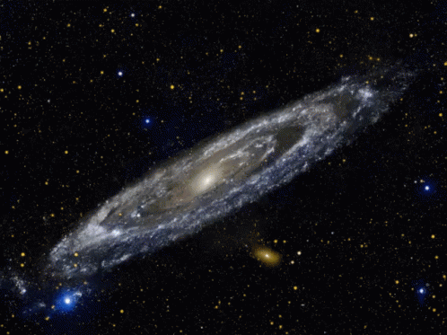
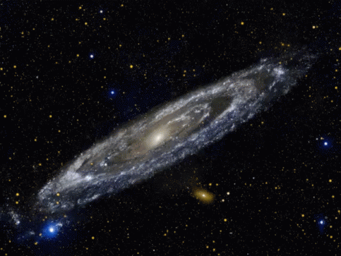
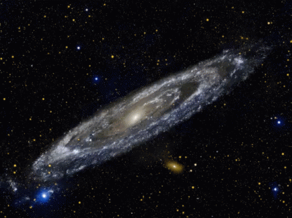

El proceso detallado por el cual se formaron las primeras galaxias es una cuestión abierta en astrofísica. Las teorías se pueden dividir en dos categorías: de arriba abajo y de abajo arriba. En las teorías de arriba abajo, como el modelo ELS (de Eggen, Lynden-Bell y Sandage), las protogalaxias se forman en un colapso simultáneo a gran escala durante aproximadamente cien millones de años. En las teorías de abajo arriba, como el modelo SZ (de Searle y Zinn), se forman primero pequeñas estructuras parecidas a cúmulos globulares y, después, varios de estos objetos se unen para formar un galaxia más grande. Una vez que las protogalaxias comienzan a formarse y contraerse, aparecen las primeras estrellas del halo (llamadas estrellas de población III). Estas estrellas están compuestas casi enteramente de hidrógeno y helio y pueden haber sido enormes. De ser así, estas gigantes estrellas habrían consumido rápidamente su combustible para convertirse en supernovas y liberar elementos pesados en el medio interestelar. Esta primera generación de estrellas reionizó el hidrógeno neutro circundante creando una burbuja en expansión a través de la cual la luz podía viajar con facilidad. En junio de 2015, un equipo de astrónomos presentó pruebas de estrellas de población III en la galaxia Cosmos Redshift 7 (o CR7) con un corrimiento al rojo de 6,6. Este tipo de estrellas (esto es, con un elevado corrimiento al rojo) es probable que hayan existido en el universo más temprano y pueden haber comenzado la producción de elementos químicos más pesados que el hidrógeno, necesarios para la posterior formación de planetas y la vida tal y como la conocemos

Algunas galaxias tienen forma de espiral como la nuestra. Tienen brazos curvados que hacen que parezcan molinetes. Otras galaxias son lisas y tienen forma de óvalo. Se las denomina galaxias elípticas. También existen galaxias que no tienen forma ni de espiral ni de óvalo. Son de forma irregular y parecen manchas. La luz que nosotros vemos de cada una de estas galaxias proviene de las estrellas en su interior. A veces, las galaxias se acercan demasiado y chocan entre sí. Nuestra Vía Láctea algún día chocará con Andrómeda, nuestro vecino galáctico más cercano. Pero no te preocupes: faltan como cinco mil millones de años para que eso suceda, y aunque sucediera mañana mismo, puede que ni te des cuenta. Las galaxias son tan grandes y están tan expandidas en los extremos que, aunque se choquen entre sí, los planetas y los sistemas solares a menudo no llegan a colisionar.